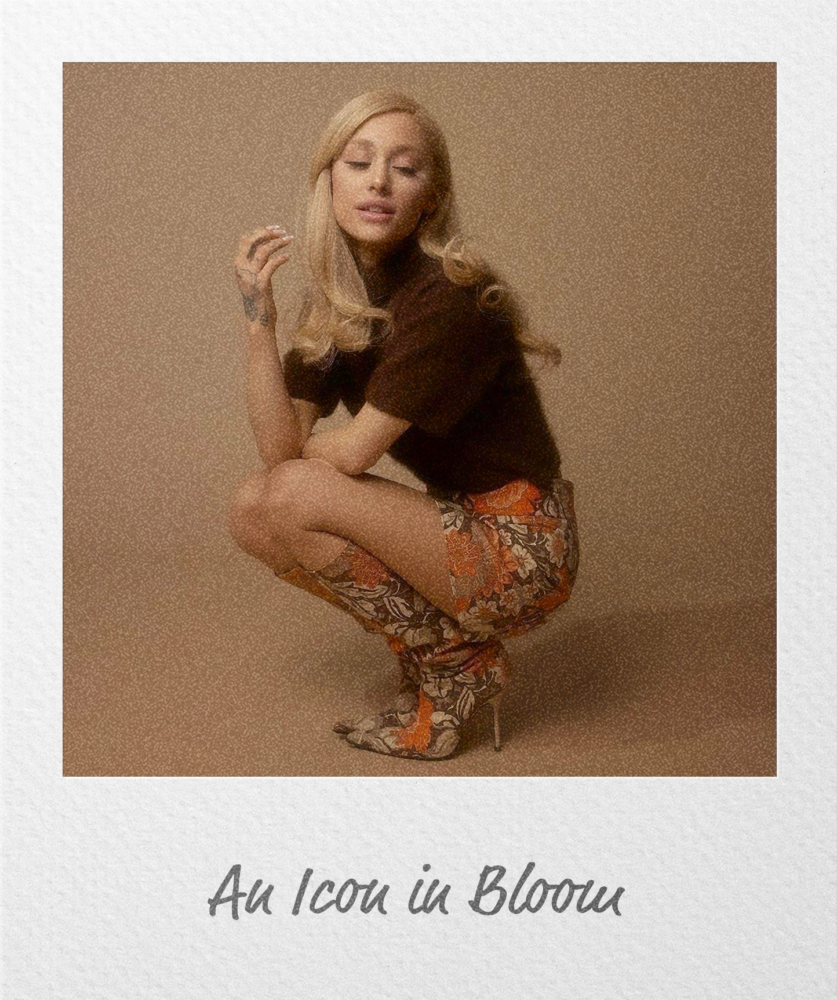
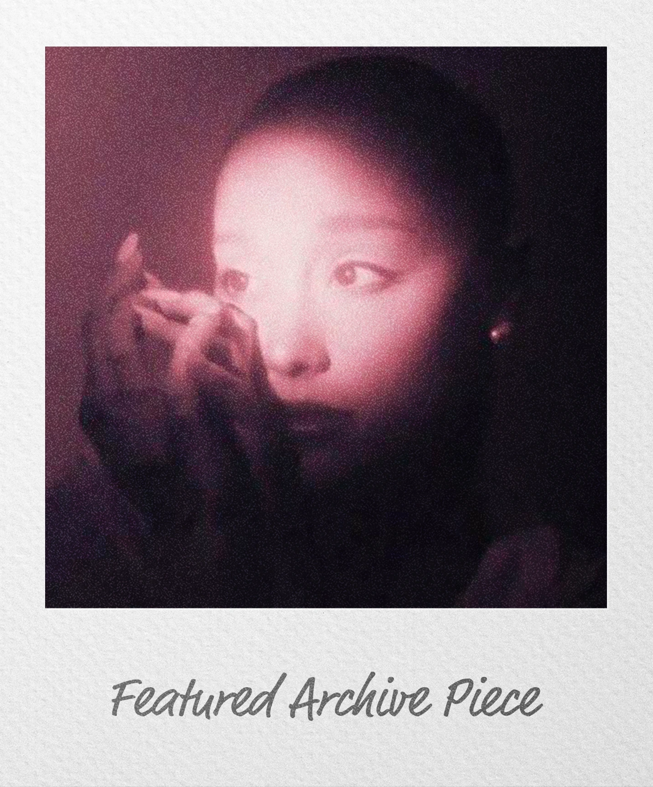
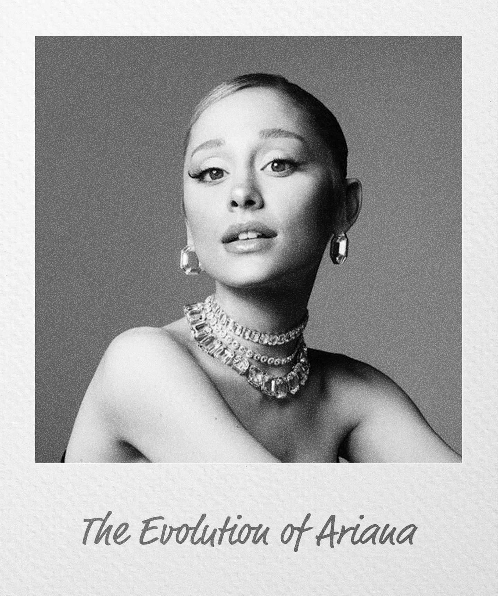
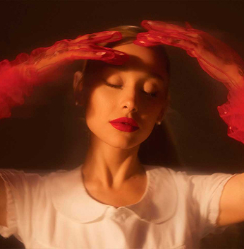
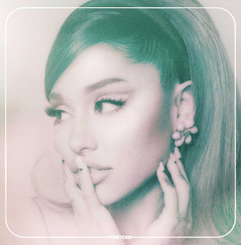
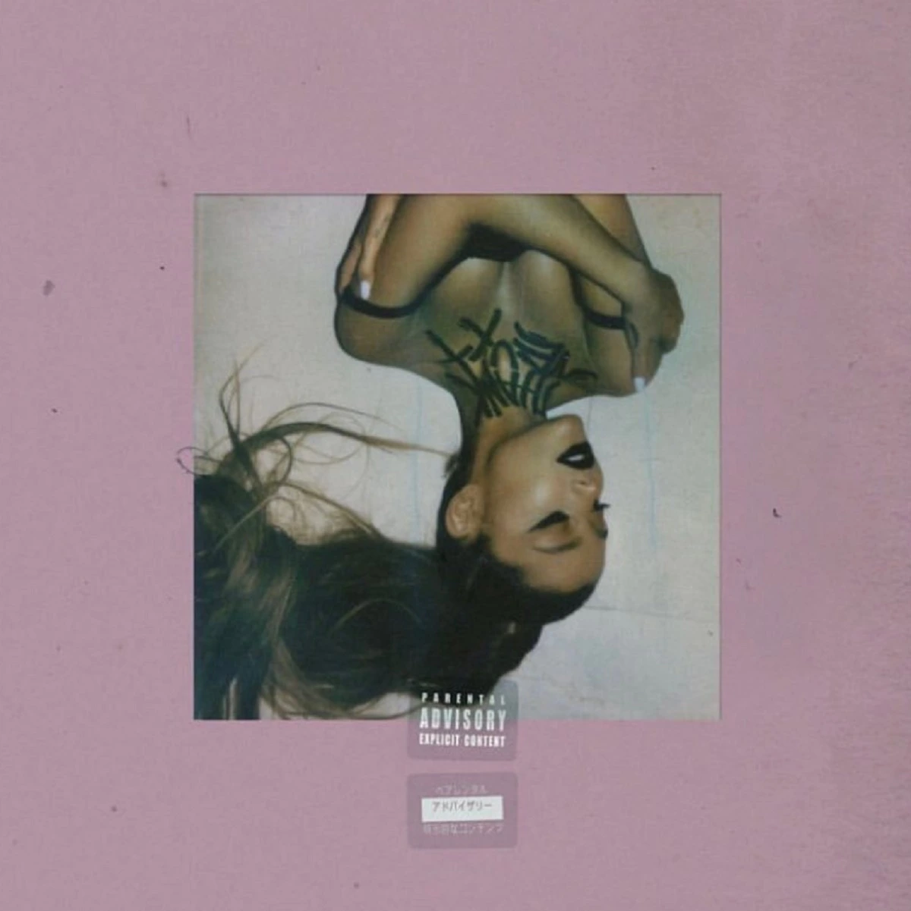
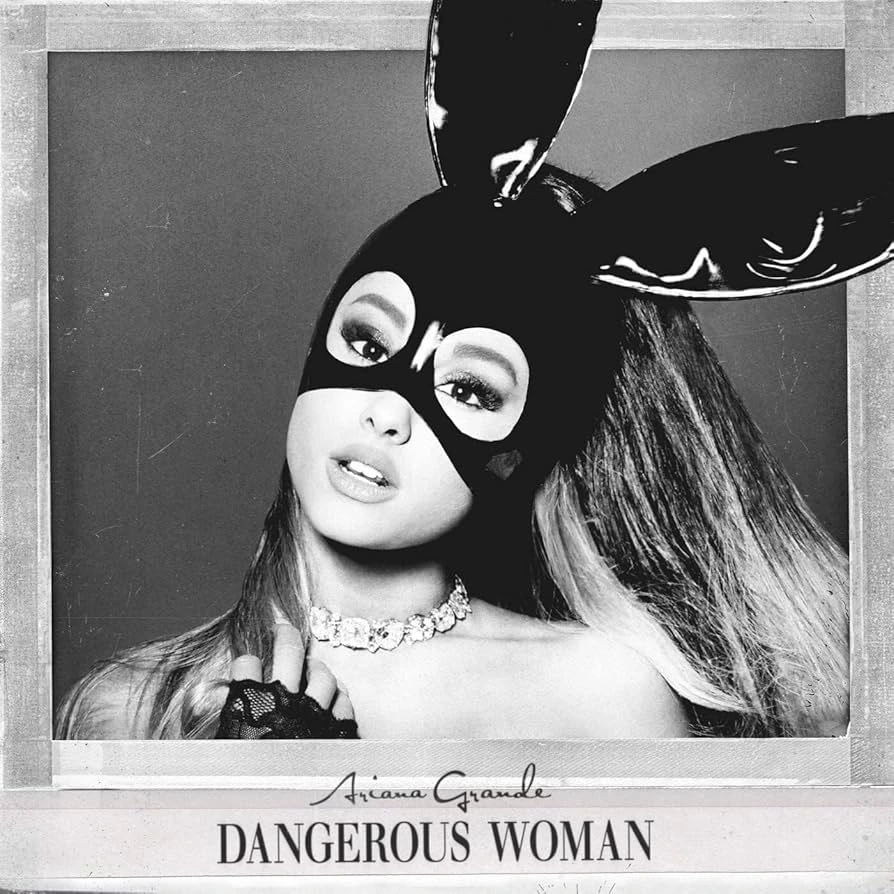
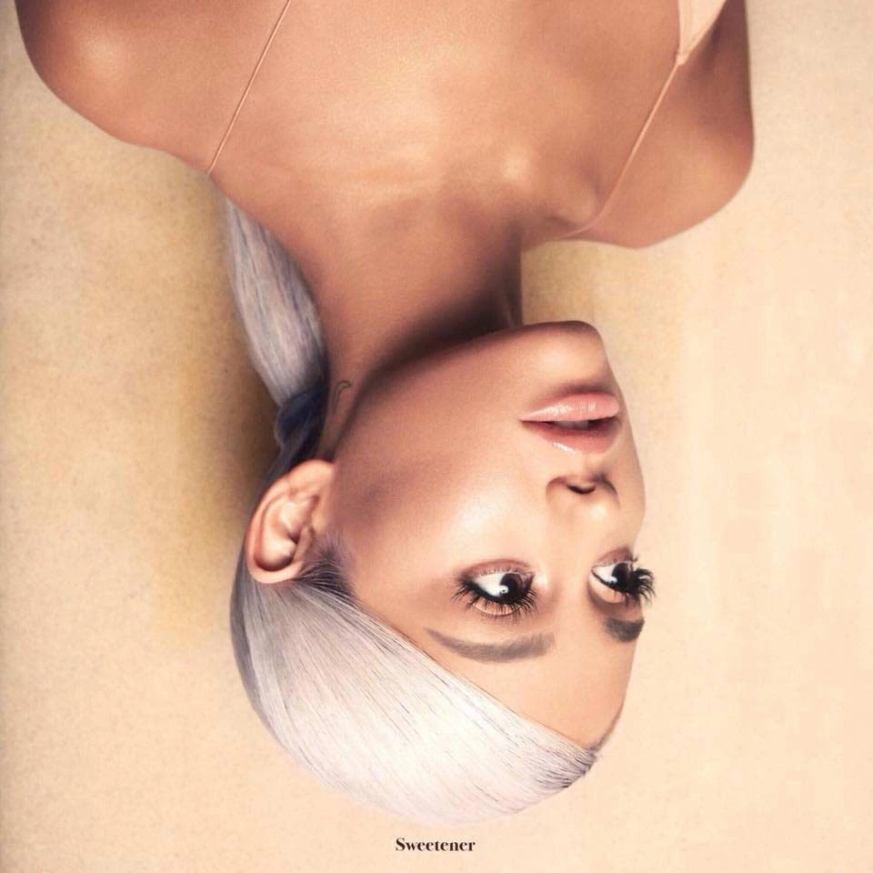

Ariana Grande began her career at a very young age, first connected to theatre and later becoming widely known through television. This first stage helped her build a strong public image, but music soon became the place where she developed her own artistic identity. From her first albums, she stood out for her powerful voice, her pop and R&B influences, and a delicate visual sensitivity that slowly became an essential part of her creative universe.
Throughout her career, Ariana has constantly changed and evolved. Each album has represented a different stage of her life and a new way of expressing herself, moving from more youthful and energetic sounds to much more personal, intimate and mature projects. Her image has also transformed through fashion, music videos, live performances and collaborations, creating a strong connection between music, emotion, aesthetics and visual storytelling.
Today, Ariana Grande is one of the most influential pop artists of her generation. Her work goes beyond music, as she has also developed projects related to acting, beauty and the construction of a very recognizable visual identity. With recent projects such as Wicked and eternal sunshine, Ariana continues to show a clear artistic evolution. This exhibition presents her not only as a singer, but as a figure capable of inspiring contemporary pop culture through music, image and emotion.



Petal Experience is an immersive exhibition created to explore Ariana Grande's artistic universe through music, image, emotion and visual storytelling. The museum is designed as a journey through different moments of her career, connecting her most iconic eras with a delicate and intimate atmosphere. Through archive-inspired photographs, album references, floral installations and carefully selected visual pieces, the visitor can understand how Ariana's identity has changed over time. The exhibition does not only present her as a pop singer, but as an artist whose work has built a very recognizable aesthetic language.





The exhibition focuses on the relationship between Ariana's music and the visual world that surrounds it. Her albums, performances, fashion choices and music videos are shown as part of the same creative universe, where every detail helps communicate a different emotion. The visitor can move through spaces inspired by her career, discovering how light, colour, photography and sound have shaped the way her image is perceived. In this sense, Petal Experience becomes a calm and emotional space where fans can reconnect with familiar moments while also discovering them from a more artistic and curated perspective.
The space has been designed with a minimal, elegant and slightly nostalgic atmosphere, using dark backgrounds, soft botanical textures, blurred flowers and neutral tones. Each section of the museum invites the visitor to slow down, observe the details and experience Ariana's evolution through a more visual and sensory approach. Besides the exhibition rooms, the experience also includes exclusive visual pieces, photo opportunities and a small merchandise area connected to the Petal Experience concept. More than a traditional museum, it works as an immersive pop culture experience where music, memory, design and emotion come together in the same place.
BUY TICKETS NOW!